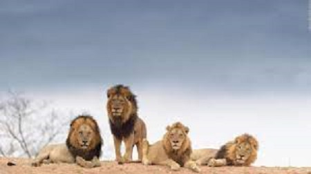

Es difícil concretar una cifra total de muertos por ataques de león. 563 personas han muerto en Tanzania en los últimos 15 años, lo que da una media de 37 al año, pero esto es únicamente en un país, si bien uno de los que tiene una mayor comunidad de estos felinos. Es posible que el número total pueda ser entorno al doble. Los leones son los únicos felinos que viven en manada. Las unidades familiares pueden incluir hasta tres machos, una docena de hembras y sus crías. Todas las leonas de una manada están emparentadas y usualmente los pequeñas hembras en su seno se quedan con el grupo a medida que envejecen. Los varones jóvenes sin embargo tarde o temprano abandonan el grupo o son expulsados y establecen su propia manada. Una abundante y frondosa melena rodea su cara y se extiende por el cuello del rey de la selva –solo los machos la poseen: este es su rasgo más característico y único en la familia de los félidos. Habitan en las sabanas africanas y en una zona reducida del noreste de la India, pero son una especie muy vulnerable pues antiguamente habitaban en otras partes del mundo de las que han ido desapareciendo. Las leonas son las encargadas de salir a cazar mientras que los machos deben defender el territorio de la manada y a sus hembras. Suelen comer grandes mamíferos como ñus, cebras, búfalos o facóceros entre otros, y pueden llegar a vivir aproximadamente unos 15 años.
Estos animales han sido venerados a lo largo de la historia por su valor y su fuerza. Una vez pudieron encontrarse en la mayor parte de África y algunas partes de Asia y Europa. Hoy en día sólo se encuentran en ciertos lugares al sur del desierto del Sáhara, a excepción de una población muy pequeña de leones asiáticos que sobrevive en el bosque Gir de la India. Aquí tienes una galería fotográfica con decenas de imágenes de leones.
